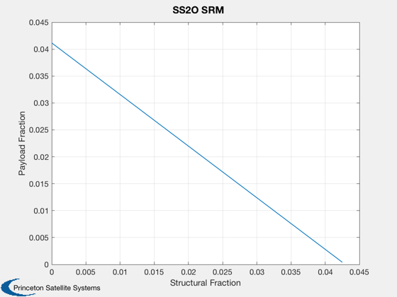

Explore Single Stage To Orbit (SSTO) for an ISS orbit
------------------------------------------------------------------------
See also Constant, Plot2D, SS2O
------------------------------------------------------------------------
Contents
Earth Rotation
omega = 2*pi/86400;
rEarth = 6378.165;
mPayload = 400;
ISS Orbit
r = 330 + rEarth;
i = 51*pi/180;
mu = Constant('mu earth');
Compute the orbital velocity
v = sqrt(mu/r);
Velocity gain from the Earth rotation
vEarth = cos(i)*omega*rEarth;
Losses due to gravity turn and drag;
vLoss = 1.5;
Total delta-v
v = v + vLoss - vEarth;
Solid rocket
iSp = 285;
fStructure = linspace(0,0.0425);
n = length(fStructure);
e = zeros(1,n);
for k = 1:n
[mF, mT, mS, e(k)] = SS2O( iSp, mPayload, fStructure(k), v );
end
Plot2D(fStructure,e,'Structural Fraction', 'Payload Fraction','SS2O SRM' );
